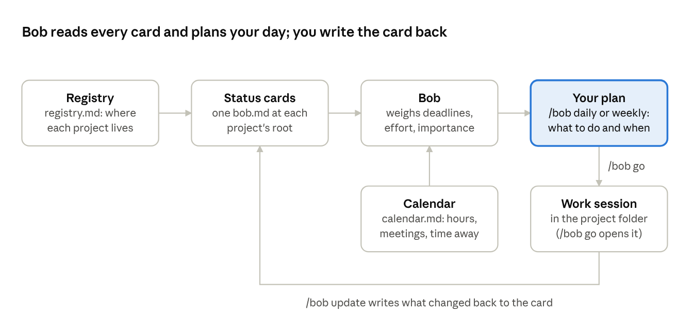
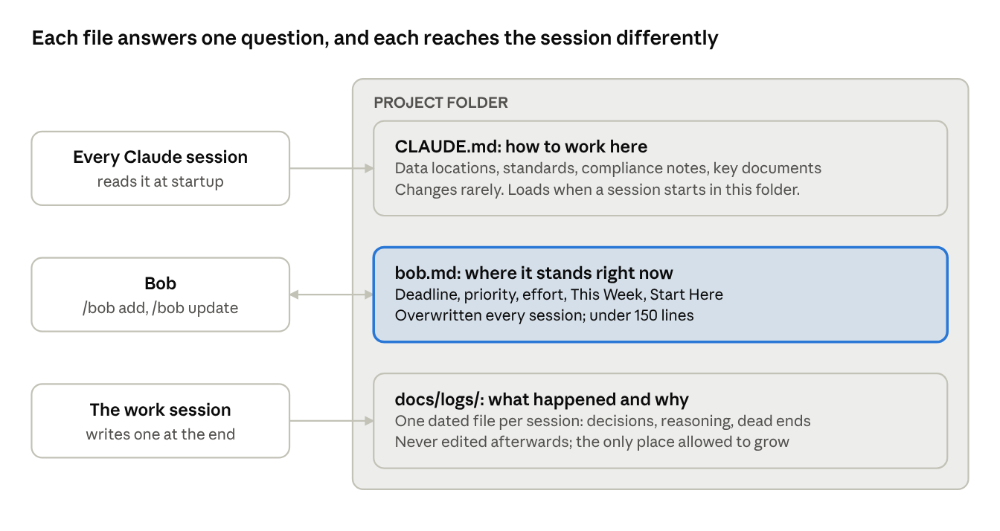
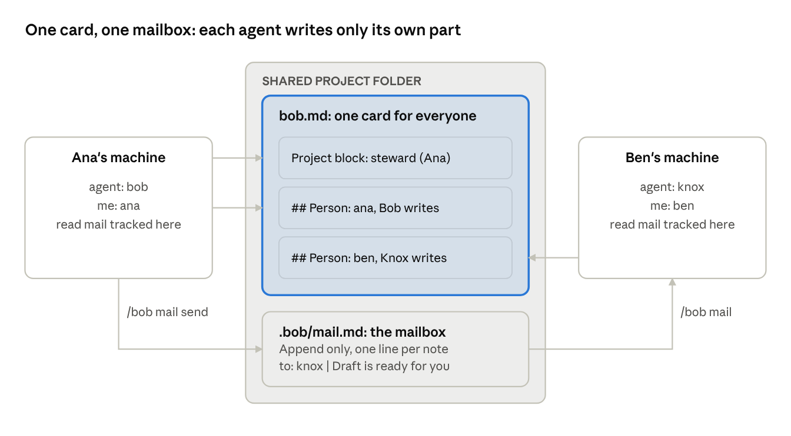

A walkthrough: what it is, how to set it up, and how a day with it goes.
A working researcher carries a dozen or more live things: two grants in different phases, a paper in revision, a course, a shared dataset, three ideas that keep getting pushed, and the admin that never ends. The urgent ones announce themselves. The important ones often don't, and they are the ones that quietly stop moving.
Working with Claude Code adds a second problem. Each session starts with no memory of the last one, so every project needs a way to say "here is where we are, start here." Collaborators and their own assistants need the same thing without a meeting.
Bob answers both with one small habit: every project keeps a short status card, and one command reads all the cards and plans the day.
Skip this if you already run it.
/bob is a skill. A skill can dispatch an agent, a specialist with its own instructions, to do the work. Bob is one skill, one agent, one R script that reads the cards, and a few small hooks that run at session start and end.Bob is a Claude Code skill that keeps all your projects in view and tells you what to work on next. It plans; it never does the research, writes the code or drafts the paper.
Each project carries a short status card, bob.md. Bob reads every card, weighs deadlines against the hours you actually have and how much each project matters, and gives you a plan. You do the work, and the card gets updated so tomorrow's plan is right.

/bob go starts a fresh session inside the project, so its instructions and memory load and nothing from the last project leaks in.You need Claude Code on a Mac, and R (so Rscript is on your PATH).
git clone https://github.com/petertanksley/bob-scheduler.git
cd bob-scheduler
./install.shThen two settings:
~/.claude/bob/identity.md holds two lines, me: <your first name> and agent: bob. The installer asks for it; Bob asks once if it's missing.~/.claude/settings.json (your user settings file, not a project one), under permissions, add the folders your projects live in to additionalDirectories, and add "Bash(Rscript ~/.claude/skills/bob/collect.R*)" to allow so Bob's collector script runs without asking. Copy both from settings.permissions.example.json in the repo.
{
"permissions": {
"additionalDirectories": [
"/Users/<you>/Documents/GitHub",
"/Users/<you>/Library/CloudStorage/OneDrive-<org>"
],
"allow": ["Bash(Rscript ~/.claude/skills/bob/collect.R*)"]
}
}Hooks are optional: merge settings.hooks.example.json into the same file for the Friday nudge, note delivery at session start, card detection when you open a project, and a reminder to update the card before you close. Bob works without them.
Start a new Claude session and type /bob. An empty registry means it worked.
Register two or three real projects, then read your first daily. Bob is only as good as the cards it has.
/bob add. Bob asks a short round of questions: what kind of project it is (research, grant, writing, admin, web or exploratory), the next deadline, how many hours are left, how many hours a week you can give it, its priority and its importance, and whether anyone else works on it.bob.md at the project root and adds the folder to your registry./bob. You get today's available hours, anything urgent, three or four focus tasks, and a "don't let this slide" note for the important project nobody is chasing.If the daily looks wrong, the card is wrong. Fix the card (/bob update <project>), not the briefing.
Six fields decide where a project lands in your plan. Keep them honest and the rest takes care of itself.
| Field | What it means | Why Bob cares |
|---|---|---|
deadline | The next date that actually bites | Sets the clock |
effort_remaining | Hours of work left, a rough guess | With the deadline and weekly hours, sets red, yellow or green pressure |
weekly_commitment | Hours a week you can give it | Too few for the work left turns the project red |
priority | How much you want it worked on now | Your stated ranking |
importance | How much it matters, deadline or not | Surfaces the quiet project losing out to loud ones |
blocking_others | Someone is waiting on you | Bumps priority one level and adds a BLOCKING badge |
The pressure colour is a pace check: hours left, divided by hours per week, against weeks until the deadline. A ratio at or above one is red (behind pace), 0.7 to 1 is yellow, below 0.7 is green. Grants use their phase: a developing grant is clocked on its submission deadline, an active one on its budget period, a submitted one has no clock at all.
Below the fields, the card has a few short sections: Objectives, Team, This Week, Upcoming Milestones, and Start Here Next Session, which is the note your next session opens with. A whole card looks like this:
---
card_schema: bob/2
project: Shift Length and Officer Sleep: Pilot Study
type: research
status: active
priority: high
importance: high
deadline: 2026-11-30
target: Conference abstract submitted
effort_remaining: 3w
weekly_commitment: 6h
last_updated: 2026-09-18
blockers: null
phase: execution
blocking_others: "Co-I waiting on the cleaned actigraphy file"
---
## Objectives
- Estimate the association between 12-hour shifts and total sleep time in a pilot sample
- Produce a conference abstract and a pre-registration for the full study
## This Week
- Finish the actigraphy cleaning script and send the cleaned file to the Co-I
- Draft the abstract's methods paragraph
## Upcoming Milestones
- 2026-09-25: Cleaned data to Co-I
- 2026-11-30: Abstract submission deadline
## Start Here Next Session
- Open analysis/code/01_clean_actigraphy.R; the non-wear threshold is the open question
- Then send the cleaned file and set blocking_others to nullThe card describes the present only and stays under 150 lines. History goes in the project's docs/logs/, and how-to-work conventions go in its CLAUDE.md. Bob prunes the card every time it updates one, moving anything dated or finished into a log.
A project usually has two Markdown files at its root that look alike and must not overlap. bob.md says where the project stands; CLAUDE.md says how to work in it. The logs say what happened and why.

bob.md | docs/logs/ | CLAUDE.md | |
|---|---|---|---|
| Answers | Where does this stand right now? | What happened, and why? | How should anyone work here? |
| Tense | Present | Past | Instructions |
| Written by | Bob (/bob add, /bob update) | The session that did the work | You, when a convention changes |
| Changes | Every session; overwritten to current state | One new file per session; never edited | Rarely |
| Size | Under 150 lines | Unlimited | As short as you can make it |
Three rules keep them out of each other's way:
Four commands cover almost everything: plan in the morning, switch into a project, record what changed, plan the week on Friday.
/bob. Run it in a "hub" session started from ~/.claude. Read the plan, pick the first project./bob go <project>. Bob copies a launch command. Press Ctrl+Shift+` in VS Code for a new terminal, paste, Enter. A fresh session starts inside the project as a new tab, loads that project's instructions and memory, and opens with a five-line pickup from its card. Close the tab when you're done./bob update <project>. Bob records what changed on the card and moves the story into docs/logs/. Do this every session./bob weekly. A short planning conversation across everything: hours available next week, what's red, what's been quietly slipping, and two questions about meetings and deadlines Bob doesn't know about yet./bob go is for.Trimmed and anonymised, but the shape is real. Bob reads the cards with one script call, then writes this. Five minutes to read.
The last line is not decoration. Bob surfaces; you decide. Move things, defer them, kill them, and the next daily reflects it.
A project several people work on keeps one card, not one per person. Everyone's Bob reads the same file.

## Person: <name> section with their own This Week, waits and Start Here. Bob edits only your section and never rewrites the whole file.bob (Laptop).md, Bob flags it and doesn't merge it. Sort it out by hand.Each shared project has a mailbox, .bob/mail.md, so the people and agents on it can pass notes without email: a handoff, "I moved the deadline", "your section is out of date". It syncs wherever the project syncs.
/bob mail send <project> <to> <subject>Bob asks for anything you left out, then adds exactly one line to the end of the file. <to> can be a person, an agent (knox), several names, or all.
/bob mailUnread entries addressed to you across all your shared projects, newest first. Your daily also says when something is waiting.
- 2026-10-16 | from: bob | to: all | Card format bob/2 | Shared cards now carry per-person sections.Append only; never edit or reorder someone's entry. Reading never touches the shared file: what you've read is tracked on your own machine, so opening mail can't create a sync conflict. Only the steward prunes, moving old entries into the project's logs word for word.
You can give your scheduler its own name and personality, and shared projects keep working. Change agent: bob in identity.md to your agent's name; name new cards after it if you like, since cards are found by a tag in their header (card_schema: bob/2) rather than by filename; and rewrite or delete the marked personality block at the top of agents/bob.md. Mail addressed to your agent's name, your own name, or all reaches you.
docs/archive/, never the bin.| Command | What it does |
|---|---|
/bob | Today's plan (same as /bob daily) |
/bob weekly | Friday planning across all projects |
/bob monthly | Milestones and stale projects over the next few months |
/bob add | Register the current project and write its card |
/bob update <project> | Record a session's progress, prune the card |
/bob go <project> | Copy the command that opens a fresh session inside the project |
/bob <project> | Look up one project: status, path, next step |
/bob grants | Grant portfolio by phase |
/bob scan | Flag stale, oversized or incomplete cards |
/bob remind <note> on <date> | A note delivered at session start on that date, plus a macOS Reminder |
/bob event <title> on <date> | Block time on Bob's calendar, plus a macOS Calendar event |
/bob mail, /bob mail send ... | Read or leave notes on shared projects |
/bob ideas | Browse or add to the idea backlog |
Under the hood, every view starts with one run of skills/bob/collect.R, which reads all the cards, the calendar and the mailboxes and prints a single facts sheet. Forty cards take under a second. The agent writes the view from that sheet.
~/.claude/settings.json. Add them there and restart the session.
The daily is wrongThe card is wrong. /bob update <project> and fix the fields; the next daily follows.
A project is missingIt isn't registered, or its folder moved. /bob scan lists untracked and missing projects; /bob add registers one.
"Rscript not found"Install R, or make sure it's on the PATH Claude Code sees. Open a new session after installing.
A card is red but pausedZero weekly hours against a real deadline is red by arithmetic. Bob flags it as paused; decide whether the pause still holds.
Two cards in one folderSync left a conflict copy, or two agents started separate cards. Bob flags both and merges nothing. Pick one, archive the other.
Bob is too chatty, or not chatty enoughThe personality is one marked block at the top of agents/bob.md. Edit or delete it; nothing else depends on it.